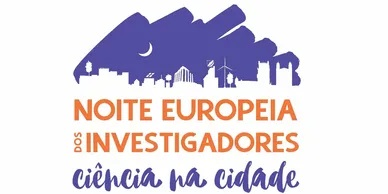

Sobre a Jade Freire
Graduada em Gestão Empresarial e com um percurso profissional diversificado e internacional, atuou em diversas áreas de empresas nacionais e multinacionais dos segmentos dos seguros, indústria e serviços.
Mestrado em Ecologia Humana pela Universidade Nova de Lisboa lhe proporcionou uma visão realista e crítica dos problemas tais como conciliar o desenvolvimento económico com a sustentabilidade.
Com o uso de ferramentas de análise transdisciplinar, designadamente nas dimensões territorial, ambiental, socioeconómica e sociodemográfica e, com soluções estruturais, integradas e sistemáticas, implantou projetos por meio da mobilização para alteração de políticas públicas, atores da cadeia de produção, distribuição e consumidores, em parceria com a sociedade civil.
Sobre o Projeto

A CleanB é um empreendedorismo de cariz socioambiental que surge pela paixão desde a infância pela natureza e o ambiente. Está fundamentado em bens e serviços ecossistémicos com parcerias colaborativas com governos, responsáveis políticos, líderes empresariais, investidores, acionistas, organizações e sociedade civil, assim como os meios académicos para promover a qualidade de cidade social, cultural, económica dentro da ótica da sustentabilidade.
Tem como principal proposta mitigar o inadequado descarte da “beata de cigarro” (filtro) através de ferramentas integradas de sensibilização, consciencialização e educação ambiental com o uso da beata de cigarro como ferramenta para disseminação da cultura antitabagismo de fumadores e não fumadores e incentivo às crianças, jovens e adultos para que nem sequer iniciem a jornada como fumadores.
Enquadramento de 4 dos 17 Objetivos de Desenvolvimento Sustentável para transformação coletiva num modelo de desenvolvimento inclusivo, equilibrado nas dimensões económicas, sociais e ambientais.


O Que Fazemos
■ Consultoria ambiental
■ Formação
■ Projetos de sustentabilidade com soluções integradas, estruturais e sistemáticas
■ Palestras
■ Workshops
■ Cursos
■ Eventos de recolha de beata de cigarro
Para criar uma cultura da redução e repercussão negativa ambiental, preservação da natureza, cidades mais amigáveis, sensibilização e consciencialização para perceção de mudança de atitude com o uso da beata de cigarro como ferramenta para disseminação da cultura antitabagismo.
Público: Crianças, adolescentes, empresas públicas e privadas, cidadãos (fumadores e não fumadores), indiferentes e para os que escolherem EVOLUIR.
Aos Indiferentes

“Precisamos dos indiferentes, dos conformados e dos cépticos. Precisamos dos que ligam demasiado ao carro.
E dos que não desligam a luz. Precisamos dos que deixam a água a correr. E dos que se demoram no banho. Precisamos dos que atiram para o mar. E dos que lançam para o ar. Precisamos dos pessimistas e dos consumistas. Dos que querem palhinha. E saquinho. E descartavelzinho. Precisamos dos que reciclam desculpas e mais coisa nenhuma. Dos que não querem e dos que não crêem.
Precisamos até dos que não fazem por mal. Precisamos dos indiferentes. Já não dá para salvar o mundo sem eles.”
Texto retirado do site Lisboa Capital Europeia Verde 2020
Por Dentro do Assunto
O consumo de tabaco e as suas consequências ambientais e para a saúde pública constituem um problema ecológico global. Cerca de 6,3 biliões de cigarros foram consumidos mundialmente em 2016, e estima-se que serão 9 biliões até 2025. Em todo o mundo são fumados mais de 15 mil milhões de cigarros por dia. Calcula-se que 1 em cada 3 adultos são fumadores, ou seja, cerca de 10 mil milhões de pessoas.
Em todo mundo são lançadas no ambiente anualmente 4,5 biliões de beatas de cigarro e representam 60% dos itens de resíduos nas cidades.
As beatas de cigarro contêm mais de 4 mil substâncias químicas, das quais pelo menos 250 são prejudiciais à saúde e 50 cancerígenas. São normalmente produzidos de acetato de celulose, um material sintético plastificado não biodegradável.
Ao longo de 5 a 12 anos, eles se decompõem em pedaços menores, reduzindo-se a micro plásticos. Além de representar um problema de saúde, afeta diretamente a economia global com impactos económicos, ambientais e sociais com custos de limpeza urbana e de despoluição da água, uma vez que a beata de cigarro é o item #1 coletado nos oceanos.
Nota¹: Dados retirados da Dissertação de Mestrado em Ecologia Humana e Problemas Sociais Contemporâneos “Consciencialização Socioambiental e Políticas Públicas para o Adequado Descarte das Beatas de Cigarro.
FCSH - Faculdade de Ciências Sociais e Humanas da Universidade NOVA de Lisboa
Nota² Utilizamos escala longa bilião (10¹²), mil milhões (10⁹)
Missão, Visão e Valores da CleanB

Missão: Mitigar o descarte inadequado das beatas de cigarro e contribuir para a formação de uma sociedade ambientalmente mais responsável e consciente.
Visão: Realizar e acompanhar projetos de educação ambiental para descarte adequado das beatas de cigarro.
Valores:
■ Transparência
■ Responsabilidade Socioambiental
■ Ética
■ Profissionalismo
■ Parcerias justas
■ Colaboração
Projetos e Atividades
Investigação Participativa
Com tema “Consciencialização Socioambiental e Políticas Públicas para o Adequado Descarte das Beatas de Cigarros”, contribuiu para a apresentação de duas recomendações e uma moção no âmbito local, e de uma lei de âmbito nacional:
▪Recomendação "O espaço público não é um cinzeiro!" (Freguesia Penha de França)
▪ Recomendação 068/03 - Assembleia Municipal de Lisboa - Pelo fim das BdC’s nas ruas de Lisboa
▪ Moção 068/01 - Assembleia Municipal de Lisboa - Políticas públicas para a classificação e tratamento adequado dos resíduos de filtros de cigarro;
▪ Projeto-lei n.º 1214/XIII/4ª - Regulamenta o fim que deve ser atribuído às pontas de cigarros, posteriormente aprovado a Lei 88/2019, 2019-09-03 na Assembleia da República.
Aceda o discurso aquiParticipação e Atuação em Conferências, Seminários, Colóquios e Reuniões
▪ Alterações Climáticas: Impactos e Respostas Sociais
▪ Comércio Justo, prática na Nicarágua
▪ Desperdício Alimentar
▪ Com a Natureza para a Compreensão Mútua (Portugal)
▪ Garden Terapy (Suíça e Eslováquia)
▪Para um Desenvolvimento Humano Inovador e Sustentável
▪ 2ª Conferência Portuguesa sobre o Lixo Marinho + Workshop "Micro plásticos"
▪Proteção Civil e Ciência entre outros (Portugal)
▪ Atolados em Lixo! Como salvar o Planeta?
▪ Consciencialização Socioambiental e Políticas Públicas para o Adequado Descarte das Beatas de Cigarro na 2ª Conferência Portuguesa sobre o Lixo Marinho (Portugal) (Palestrante)
▪Ações de limpeza de praias e voluntariado no projeto Fruta Feia.
Concurso Prémio Melhor Ideia de Negócio 2018 e 2019
Participação do concurso Prémio Melhor Ideia de Negócio, NOVA FCSH, Centro de Inovação Ciências sociais e Humanas, Santander Universidades em 2018 e 2019, no qual na última edição ficou entre as sete melhores ideias de empreendedorismo de cariz socioambiental.
A CleanB, apresentou um projeto com soluções inovadoras integradas, estruturais e sistémicas para mitigar o impacto do inadequado descarte das beatas de cigarro na via pública e no ambiente.
Semana Europeia de Prevenção de Resíduos (EWWR) 2018
Organização da Semana Europeia da Prevenção de Resíduos (EWWR) 2018. Uma ação voluntária de recolha de beatas de cigarro no campus da FCSH. Atividade apoiada pelo Grupo de Ecologia Humana, pela Associação de Estudantes e do Departamento de Comunicação da FCSH.
“Prevenção de resíduos perigosos: hora de desintoxicação” foi o tema da Semana Europeia da EWWR 2018.
Mais do que recolher um resíduo não biodegradável que contém mais de 4 mil substâncias químicas, no qual cerca de 300 são prejudiciais à saúde e causam impactos económicos, ambientais e sociais, o objetivo principal foi consciencializar as pessoas que deitar uma beata de cigarro para o chão não é um ato inocente.
A iniciativa teve considerável atenção da comunicação social.
Aceda os links abaixo.
Publico.pt A Luta de Jade FreirePublico.pt As Beatas Envenenam
Noite Europeia dos Investigadores 2019
Participação na Noite Europeia dos Investigadores 2019, através do Centro Interdisciplinar de Ciências Sociais da NOVA (CICS.NOVA-FCSH). A intervenção teve o título “A mudança começa com a consciencialização, vamos conhecer?”.
O enquadramento foi a exposição pública dos dados estatísticos da produção de cigarros mundialmente, o consumo na Europa, a estimativa de beatas de cigarros descartadas e o impacto do inadequado das mesmas na saúde humana, no ambiente, na economia e imagem da cidade.
Demos a conhecer à aproximadamente 800 pessoas de diferentes idades e áreas que passaram no espaço durante as 6 horas de evento, por meio de uma visita interativa com o uso dos materiais visuais com linguagem positiva e informativa como cartazes, panfletos, roll-up e um globo terrestre de acrílico repleto de beatas de cigarro, para mostrar a importância de começar a redução do impacto global pelos comportamentos locais na nossa cidade.
Carnaval Verde 2020
Gestão do projeto Lisboa “Carnaval Verde 2020” de cariz socioeducativo e cultural. Com cobertura mediática e participação de ≈5000 pessoas/dia.
O objetivo foi mostrar aos participantes as questões de sustentabilidade para assegurar a qualidade de vida através de educação, informação, conhecimento, consciencialização e perceção da importância da preservação ambiental e do ecossistema, além de contribuir com o galardão do prémio Lisboa Capital Verde Europeia 2020.
O evento foi realizado com apoio e parcerias do setor público e privado e arrecadou fundos para abertura de uma associação sem fins lucrativos para promover mecanismo de criação de respostas inovadoras de impacto por meio de educação arte e cultura.
Um taco no Tabaco
1 Descrição do Projeto

Durante décadas, a indústria do tabaco empregou deliberadamente táticas estratégicas, agressivas e com bons recursos para atrair jovens para produtos de tabaco e nicotina. Essa é uma questão premente e um desafio para os formuladores de políticas de controlo do tabaco em todos os países.
Segundo dados de 2015 (WHO), 17% dos jovens entre 15 e 24 anos fumam em todo o mundo. Na Região Europeia, 11,5% das meninas e 13,8% dos meninos entre 13 e 15 anos são usuários de tabaco.
A indústria do tabaco está ciente, uma pessoa que começa a fumar antes dos 20 anos de idade não só tem mais probabilidade de desenvolver um vício, como também pode ter uma capacidade prejudicada de exercer controlo sobre o tabagismo mais tarde na vida.
Cerca de 6,3 biliões de cigarros foram consumidos mundialmente em 2016, e estima-se que serão 9 biliões até 2025. Em todo o mundo são fumados mais de 15 mil milhões de cigarros por dia, calcula-se que 1 em cada 3 adultos são fumadores, cerca de 10 mil milhões. No planeta são lançadas no ambiente anualmente 4,5 biliões e representam 60% dos itens de resíduos descartados inadequadamente nas cidades.
Os filtros são produzidos de material sintético plastificado não biodegradável, contém mais de 4 mil substâncias químicas das quais pelo menos 250 são prejudiciais à saúde e 50 cancerígenas. Afeta a economia com custos de limpeza urbana e da despoluição da água, bem como a desvalorização de território, ambiental e social, e é item número 1 coletado nos oceanos.
Acresce ao exposto que as estimativas da OMS indicam que serão necessários mais esforços no sentido de alcançar a meta de redução relativa de 30% na prevalência de fumadores, na população com 15 ou mais anos, até 2025. Uma abordagem global e intersectorial, apoiada pelas organizações da sociedade civil e pelos cidadãos, que otimize as sinergias entre diferentes estratégias – educativas, de prevenção e tratamento, legislativas, económicas e sociais – constitui o princípio orientador para a redução da sobrecarga de saúde, social e económica imposta pelo tabaco.
2 Proposta do Projeto
Em resposta às táticas sistemáticas, agressivas e sustentadas das indústrias de tabaco, realizadas para atrair uma nova geração de usuários, o projeto tem como objetivo atuar em campanhas direcionadas aos jovens e crianças, além de contribuir para o desenvolvimento das competências para a vida.
3 Objetivo Geral do Projeto
Contribuir para a formação de uma sociedade mais autónoma, saudável e ecologicamente sustentável, por meio de ações de educação e arte junto aos jovens e crianças, é maior objetivo do Projeto “Um taco no tabaco”.
4 Eixos do Projeto
• Educação: Programa de Embaixadores Antitabaco
• Competências para a vida
• Sustentabilidade: Ações de sustentabilidade ambiental
A construção da consciência cidadã é um processo que demanda ações continuadas e coordenadas a médio e longo prazos. Por isso, o projeto “Um taco no tabaco” prevê parceiras estratégias que possam perpetuar as ações por ele iniciadas e desenvolvidas.